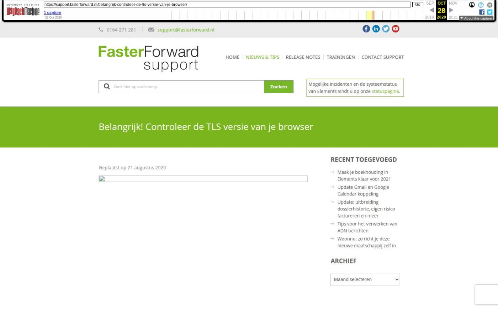

Belangrijk! Controleer de TLS versie van je browser

Tekstinhoud
Geplaatst op 21 augustus 2020
Op 14 september 2020 wordt Elements geüpdatet. Vanaf dat moment kun je op bepaalde oude browsers, tablets en telefoons Elements niet meer gebruiken. TLS 1.0 en 1.1 worden dan namelijk niet meer ondersteund.
Het gebruik van TLS 1.0 en 1.1 wordt niet meer als voldoende veilig beschouwd. Daarom zullen we vanaf 14 september 2020 op onze servers uitsluitend nog gebruik maken van TLS 1.2 en hoger. Zo houden we de veiligheid van Elements up-to-date.
De oude TLS versies worden nog maar zeer weinig gebruikt voor het opzetten van een veilige verbinding. Hierdoor heeft deze wijziging voor veel mensen geen invloed. Toch is het belangrijk om je browser te checken.
Wat wijzigt er?
De internetprotocollen TLS 1.0 en 1.1 worden niet meer ondersteund door alle grote browsers. Denk hierbij aan Apple Safari, Internet Explorer, Google Chrome, Microsoft Edge en Mozilla Firefox. TLS 1.0 en 1.1 worden namelijk als minder veilig beschouwd omdat ze gebruikmaken van functies die gedateerd zijn.
Ook voor Elements zijn deze verouderde protocollen onveilig, waardoor we moeten updaten. Zo kunnen we alle gegevens optimaal blijven beveiligen.
Wat moet je doen?
Het is belangrijk om te controleren of je browser beschikt over TLS 1.2 of hoger. Gebruik je Elements (niet: de On Route app) ook wel eens via een browser op een oude tablet of mobiele telefoon? Dan moet je dit ook hierop controleren!
Dit doe je op de volgende manier:
SSL Labs
De TLS van je browser test je met ‘Test your browser’ via SSL Labs. Deze site controleert je browser vrij uitgebreid op met name het gebruik van TLS.
Onder ‘Protocol Features’ zie je of je browser beschikt over TLS 1.2 en/of hoger (zoals in onderstaand voorbeeld). Als dat zo is, hoef je verder geen actie te ondernemen.
Browser updaten
Als je browser niet beschikt over TLS 1.2 of hoger, is het belangrijk om je browser te updaten.
Categorie: Algemeen